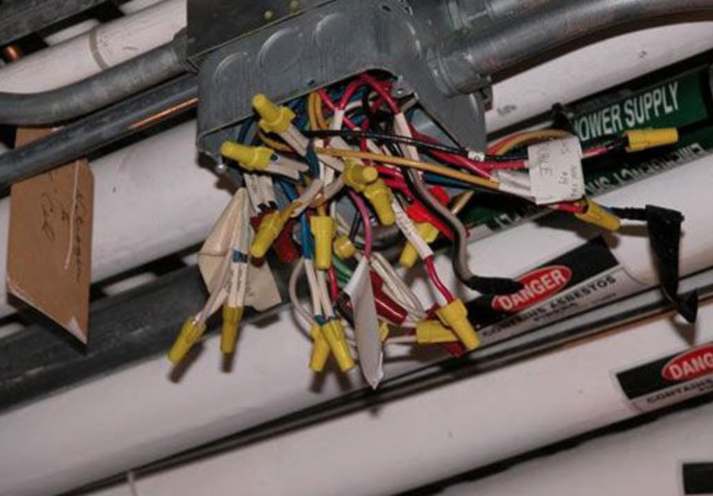
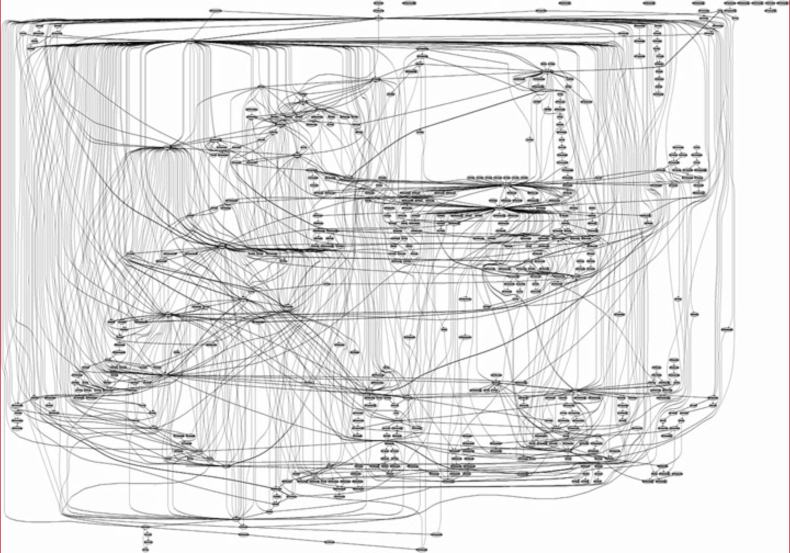
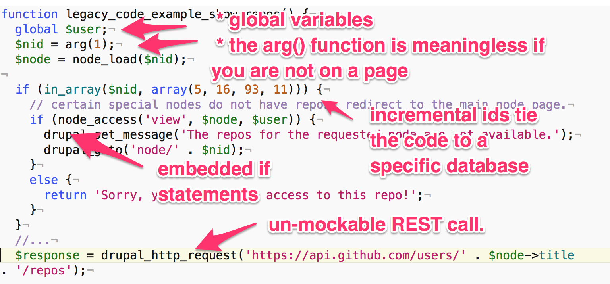

Modifying legacy code the right way
(hint: do not add if statements)
by Albert Albala
@alberto56 - Dcycle

"Can we add a light fixture here?"
"Best practices"
- Automated tests
- Continuous integration server
- Known good starting point (do not clone the database)
- Small pure function that do one thing
- DevOps (Docker, Vagrant)
- Mock objects and dependency injection
"Can you add a custom message if the current user is not logged in?"

"Sure (should take about 1 story point)."
Rule #1 of modifying legacy code.
Don't do it.
"Code with no test coverage is legacy code."
"Best practices"
- Automated tests
- Continuous integration server
- Known good starting point (do not clone the database)
- Small pure function that do one thing
- DevOps (Docker, Vagrant)
- Mock objects and dependency injection
What's wrong with this code?

That's what's wrong.
Sample legacy code
https://github.com/alberto56/legacy_code_example
Rule #2 of modifying legacy code.
Move legacy code to class methods (still, don't touch it) .